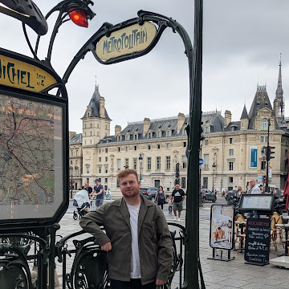

Originally born in Barnsley, I moved to Huddersfield during my childhood and consider this to be my home. I am a true Yorkshireman at heart, and proud of it! Currently, I live with my partner, Radhika, in the Greater Manchester area, but I am always looking for a reason to return to the motherland.
After completeing my A-levels in 2013, I choose to study Chemistry at the University of York, as I couldn't bare to leave my beloved Yorkshire. After completeing my Masters in 2017, I pursued a PhD in Synthetic Organic Chemistry at the Univeristy of Sheffield, under the supervison of Dr. Ben Partridge and Prof. Joe Harrity.
After obtaining my PhD and a short stint as a Postdoctoral Research Associate at the University of Sheffield, I transitioned out of academia and into the wider chemical industry. For the past two years I was working as a Synthetic Medicinal Chemist in the area of drug disocvery. However, during this time I became frustrated and disillusioned with the lack of collaberation and creativity I was observing throughout the entire industry.
That's enough about Chemistry, in 2024, I was hired by Barclays for a role on their Aspiring Developer Graduate Programme. Through this oppertunity I have been enrolled on the Multiverse Level 4 Software Developer Apprentiship. I am currently learning JavaScript, HTML and CSS, although in the past I have also dabbeled with Python and R.
Ouside of work I love nothing more than meeting up with my friends for a few pints. Alongside this I enjoy watch live music and comedy, playing squash (badly) and watching cricket at Headingly.